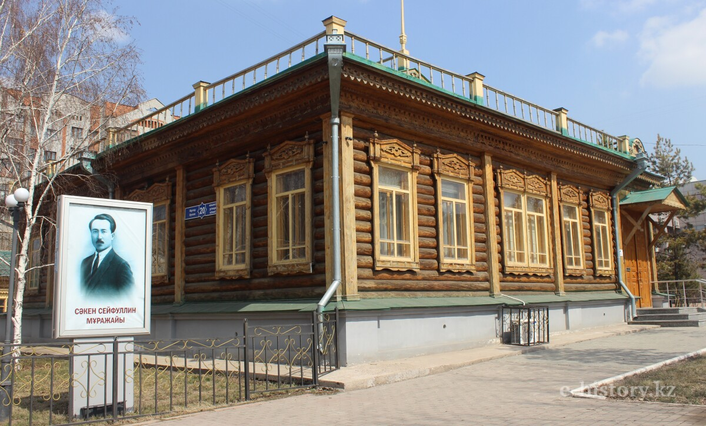

Preserving the legacy of Kazakh literary pioneer and public figure
Welcome to the Museum
The Saken Seifullin Museum in Astana is dedicated to honoring the life, literary contributions, and political activity of Saken Seifullin, one of the founders of modern Kazakh literature.
Located in a historic wooden building from the late 19th century, the museum offers visitors a unique journey through early 20th-century Kazakh history.

The historical building of the Saken Seifullin Museum.
News & Updates
Special Event: Join us this month for an exclusive exhibition featuring rare manuscripts and personal correspondence from Seifullin's early career.
Guided tours are available in Kazakh, Russian, and English. Please book in advance on our Visit page.